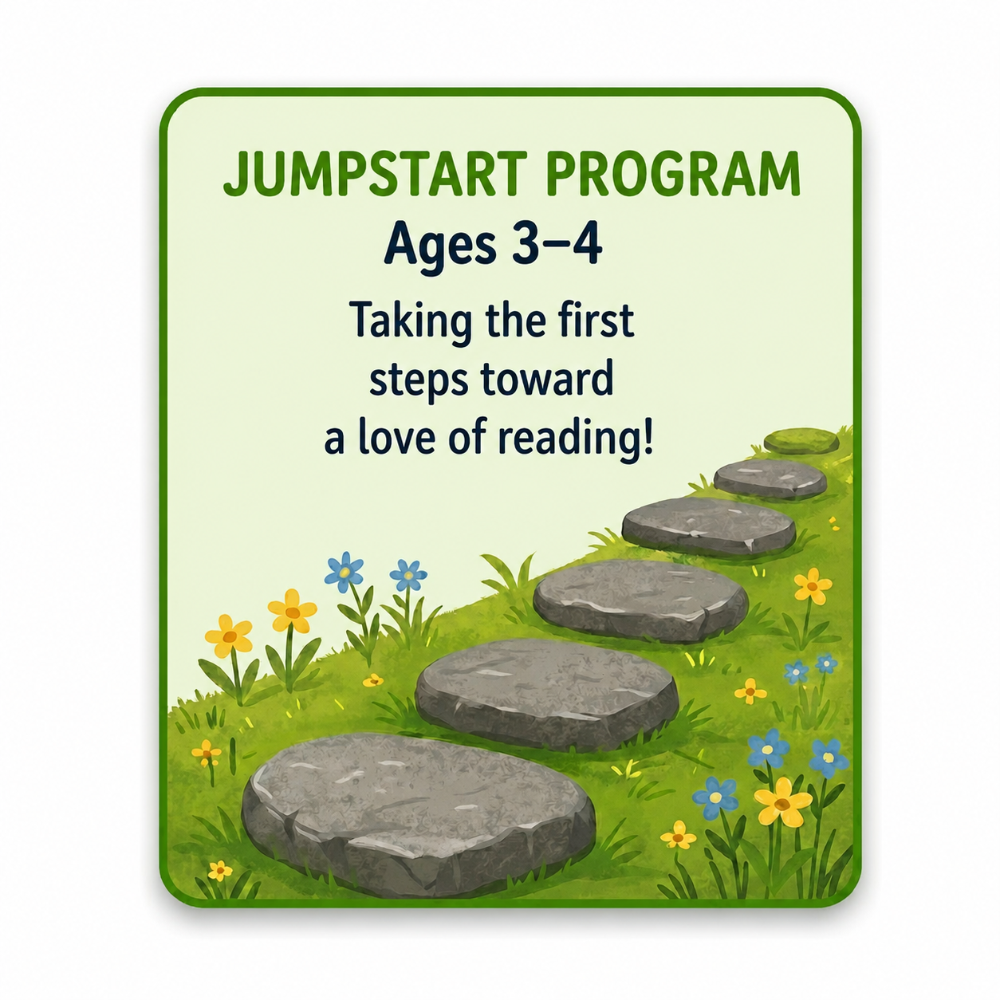

Jumpstart Program
Taking the first steps toward a love of reading.
For the tiniest learners. Lots of play, lots of laughter, lots of "wait, I know this letter!" moments. This is where the love of learning is planted.
- Letter recognition & sounds
- Listening & vocabulary growth
- Read-aloud comprehension
- Fine motor & pre-writing skills
- Counting, shapes & patterns
- Calm, confidence-building pace